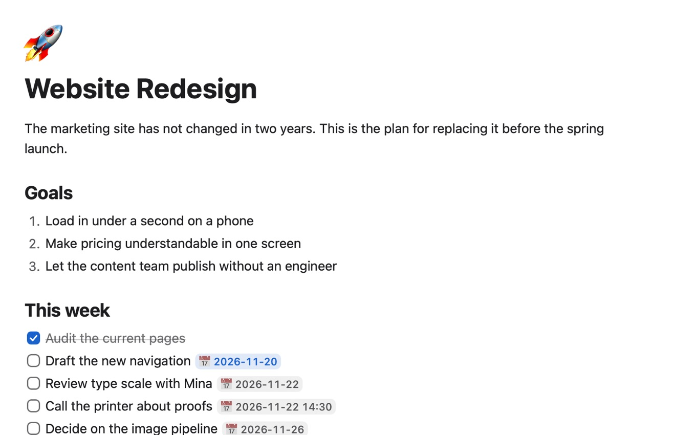
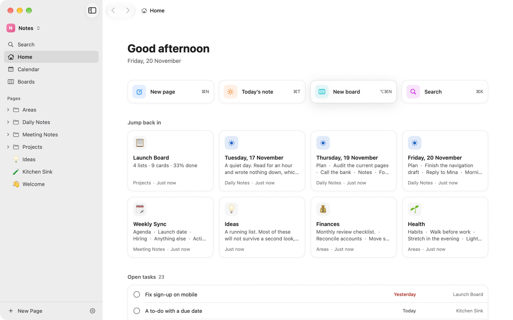
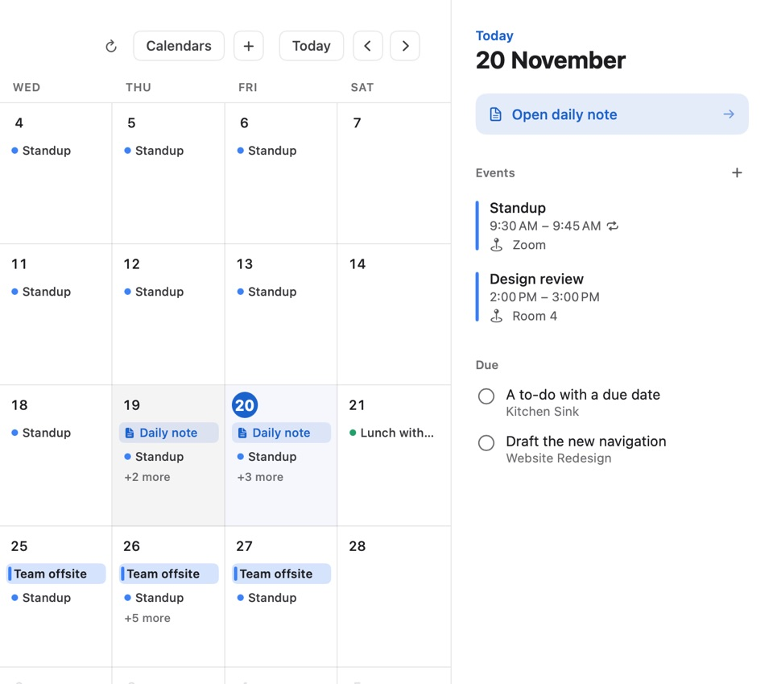
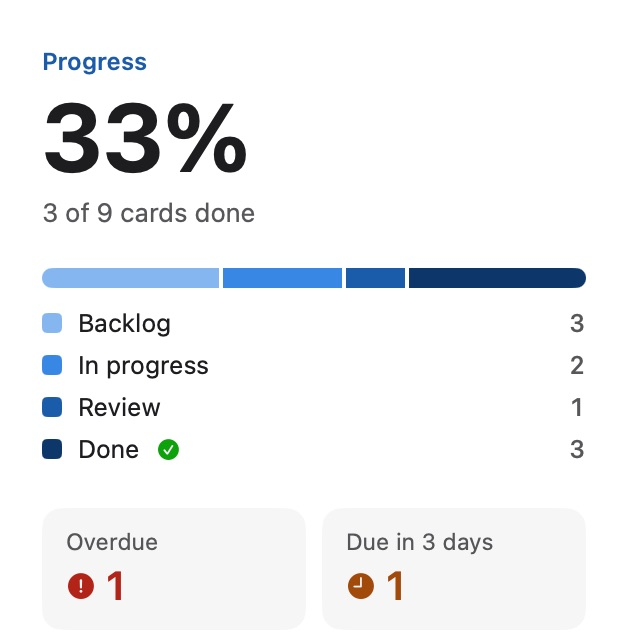
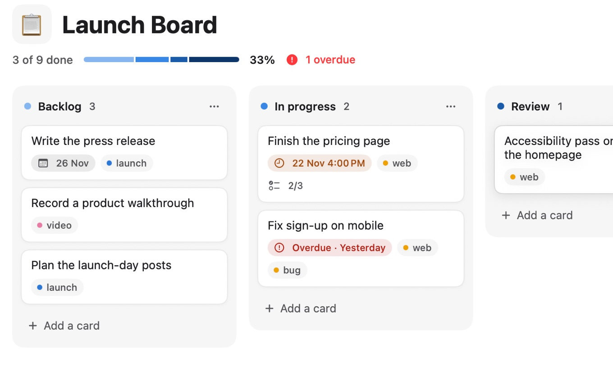
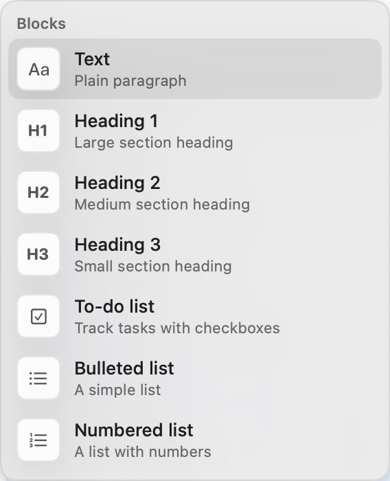
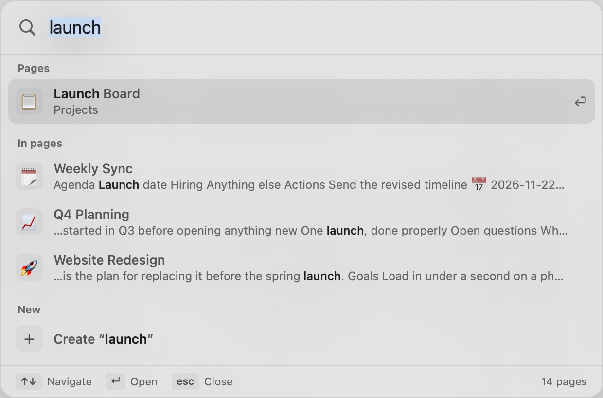

Notes that are just files
A clean editor over your own Markdown files, compatible with Obsidian. Nothing is uploaded: the files stay where you keep them.

LP keeps every page in plain Markdown files, in a folder you choose. No account, no servers, no tracking.

Pages and boards are plain files you own, and your calendars sit right next to them.
A clean editor over your own Markdown files, compatible with Obsidian. Nothing is uploaded: the files stay where you keep them.

Your Apple, Google and Outlook calendars next to your notes. Events you create or change in LP are saved back to the calendar they belong to.

Each board shows what’s done, what’s overdue and how long cards take to finish.

Kanban boards stored as Markdown files. When you want to, share a read-only progress page with a link.

Type / to add a heading, a to-do list or another block without reaching for the mouse.

Press ⌘K (or ⌘P) and type: LP finds pages by their name and by what’s inside them, and opens the one you pick.

LP is an app, not a service. Your notes, boards and calendar copy live on your Mac, and none of it is sent to the people who make LP.
Every page and board is a Markdown file in a folder you choose. Any text editor can open it.
There’s nothing to sign up for. LP goes online only for what you turn on: the calendars you connect and the boards you share.
A connected account’s sign-in is kept in your Mac’s Keychain. The people who make LP never see it.
No analytics, no telemetry and no ads. Nothing about how you use LP is sent anywhere.
LP connects to Google or Microsoft only when you click Connect and approve on their own page. Every request goes straight from your Mac to them: LP has no servers, no accounts, no analytics and no ads, and the people who make LP never receive your data or your sign-in, which stays in your Mac’s Keychain.
calendar.calendarlist.readonlycalendar.eventsLP keeps a copy of a year back to two years ahead on your Mac, so your calendar works offline.
Only if you choose to share a board there
drive.fileCalendars.ReadWriteoffline_accessLP’s use and transfer of information received from Google APIs adheres to the Google API Services User Data Policy, including the Limited Use requirements. Your data is used only to show and edit your calendar in LP on your Mac and to publish the board pages you choose to share; it is never sold, never transferred to anyone else, never used for advertising, and never read by people.
Disconnecting an account in LP removes LP’s copy and asks Google to end LP’s access; you can also remove LP’s access any time in your Google or Microsoft account settings.
Privacy PolicyTerms of UseWhat each connected account allows
LP runs on macOS 15 and later. It is free, and its code is under the MIT License.
Questions or problems? Write to ltf.dev.supp@gmail.com.